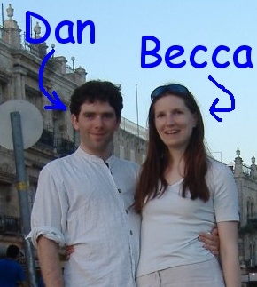

The wedding is at two venues in central Edinburgh.
The registry office is in Parliament Square (map).
The The Merchant's Hall is at 22 Hanover Street, Edinburgh (map).
Both venues are 5 minutes walk from the main train station (Waverley).
The wedding will be on the 8th September 2007.
The registry office ceremony is at 3:30pm.
This will be followed by readings and blessings at the Merchant's Hall at 4:30pm,
followed by dinner and a ceilidh until midnight.
The dress code is "smart/casual" which we think means "dress however makes you feel good". Ceilidhs are quite energetic; high heels are not advised. The weather in Edinburgh at the end of the summer should be mild. We have ordered sunshine but cannot guarantee it.
Yes. If you would like to bring a partner then please do. Please let us know when you reply.
Please RSVP by 1st July to Mr and Mrs J Smith by email to , or by post to 122 Fairways Drive, Mount Murray, Isle of Man, IM4 2JB. Thank you.
To make present shopping easier - and avoid getting half a dozen toasters - we have put together a gift list. Please feel free to ignore it.
The London train takes 4 1/2 hours from Kings Cross. The wedding venue is 5 minutes walk from the main station (Edinburgh Waverley). Do allow time for the trains to be late.
Flying is slightly faster and tends to cost around the same as the train. The bus from Edinburgh airport to the city centre takes 1/2 hour (get off at the end of the line by the train station). If you fly, we ask that you offset the carbon emissions. We use Equiclimate. It's cheap and they have been approved by the government.
You can find information on accomodation from: VisitScotland.com